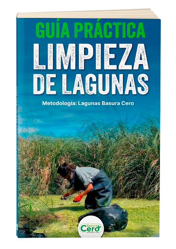
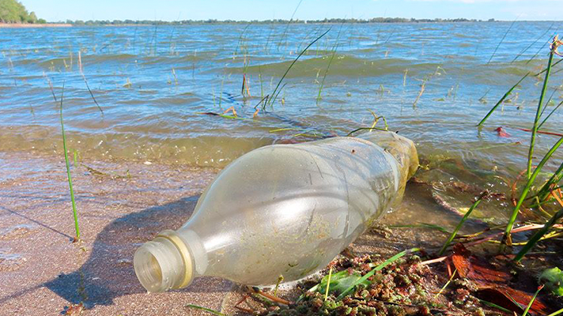
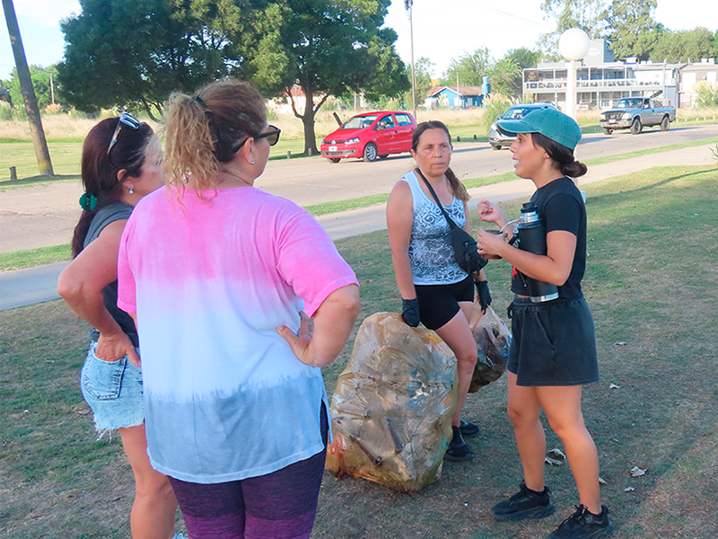
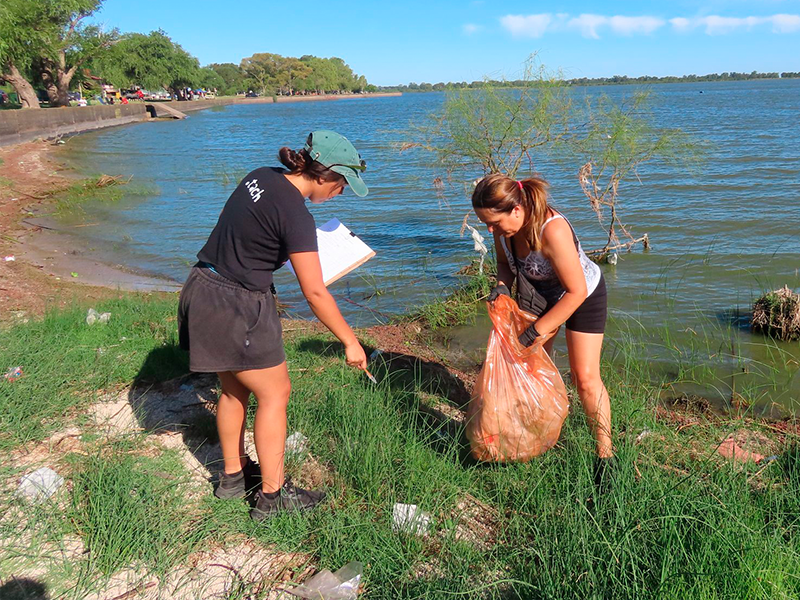
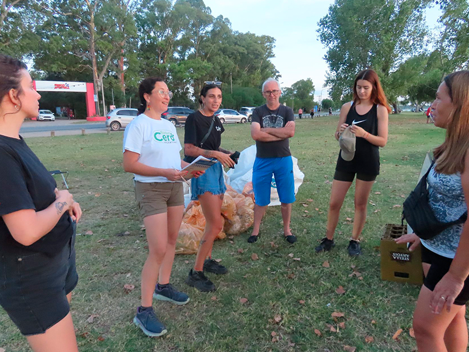
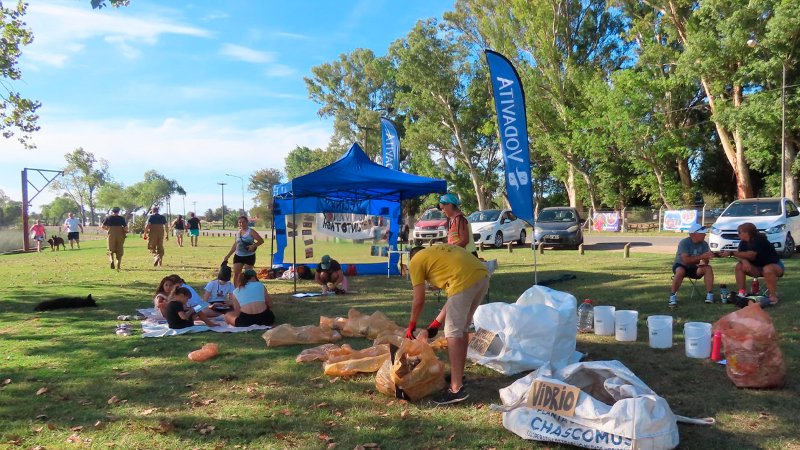
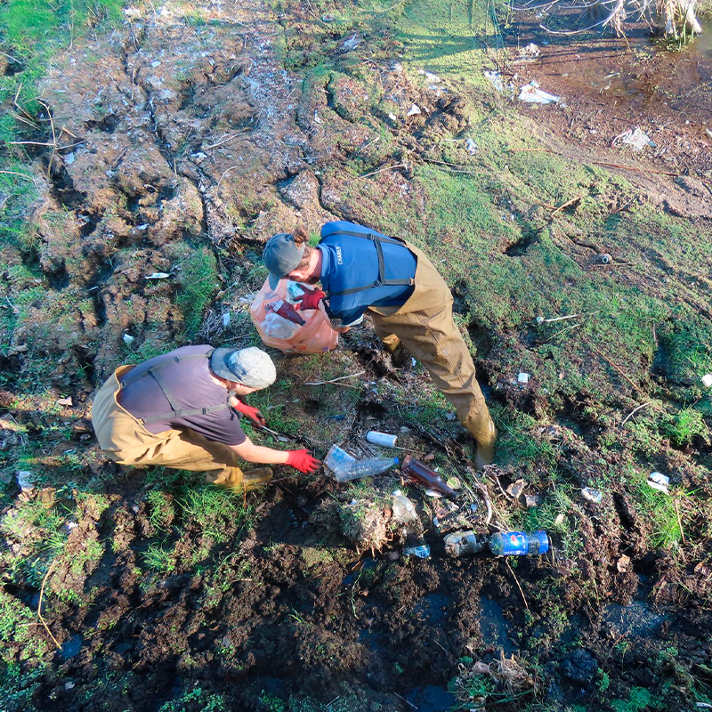
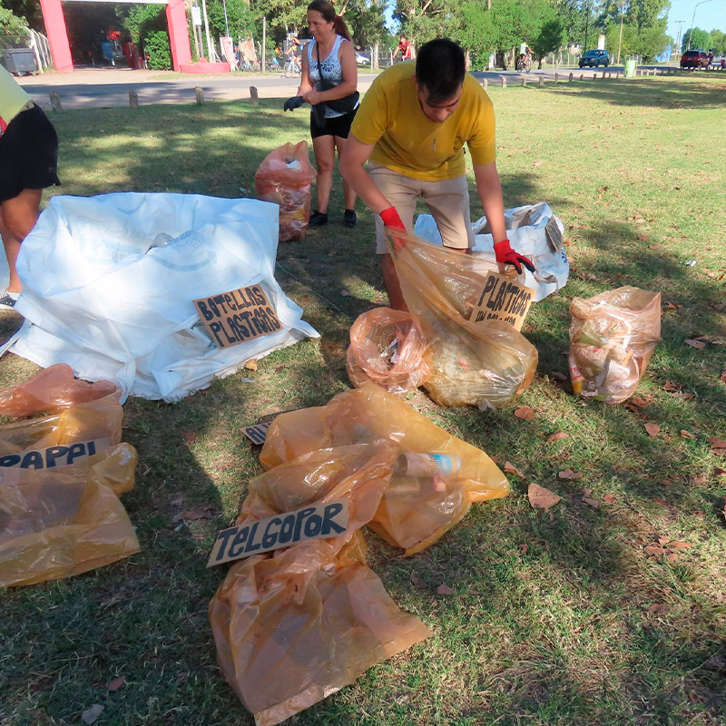
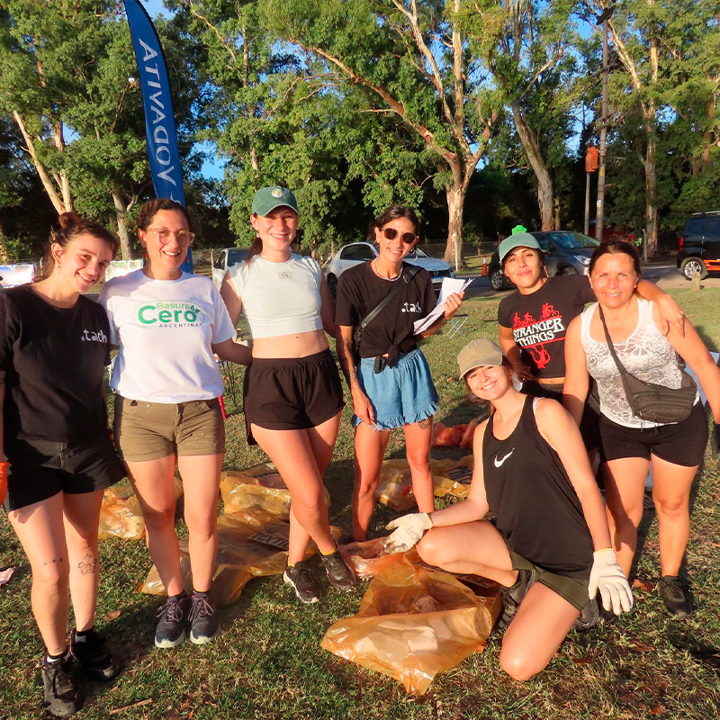
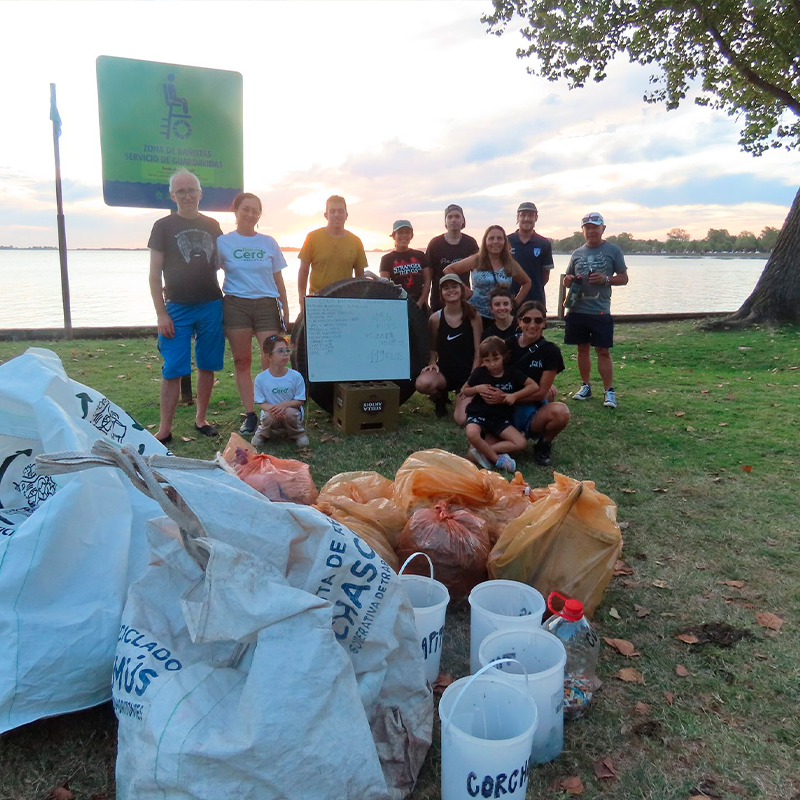

Una herramienta integral para la gestión comunitaria de residuos en entornos hídricos, diseñada para transformar la acción local en impacto ambiental real.

La contaminación por plásticos y desechos urbanos no es solo un problema estético; afecta directamente la biodiversidad, la calidad del agua y la salud de nuestras cuencas pampeanas. Los microplásticos ya forman parte de la cadena trófica de nuestras lagunas.
Entender el impacto es el primer paso indispensable para la acción territorial efectiva.

Desarrollada a partir de la experiencia de Punto Tech en la Laguna de Chascomús, esta guía sistematiza años de trabajo comunitario y metodologías de censo de residuos.
Planillas de censo
Encuestas comunitarias
Conceptos Basura Cero
Recomendaciones GIRSU

Definición de zonas, convocatorias y logística necesaria para una jornada segura y efectiva.

El día del Lagunazo: censo de residuos, recolección clasificada y trabajo comunitario en campo.

Procesamiento de datos, comunicación de resultados e incidencia en políticas públicas locales.
Lagunazo Chascomús · 21 de febrero de 2026
1.728
Objetos censados
842
Plásticos
120kg
Basura Total
320
Colillas de cigarro
Para gestores públicos que buscan metodologías de censo de residuos.
Para ONGs ambientales que deseen organizar limpiezas con rigor científico.
Para grupos de vecinos que quieren cuidar su entorno hídrico local.
Para docentes que buscan materiales prácticos de educación ambiental.
Este documento nace de la colaboración interdisciplinaria entre expertas en gestión ambiental y el compromiso de los vecinos de Chascomús.
Paula Ramírez, Luciana Schoj y Camila Sánchez. Integran el Movimiento Basura Cero Argentina y residen en Chascomús, Provincia de Buenos Aires. Esta guía surge de la unión de sus saberes profesionales y su activismo territorial.
Fotografías: Inés Otero





Escribinos y te respondemos a la brevedad. Somos Punto Tach, desde Chascomús, Buenos Aires.
Gracias por escribirnos. Te respondemos a puntotach@gmail.com en los próximos días.